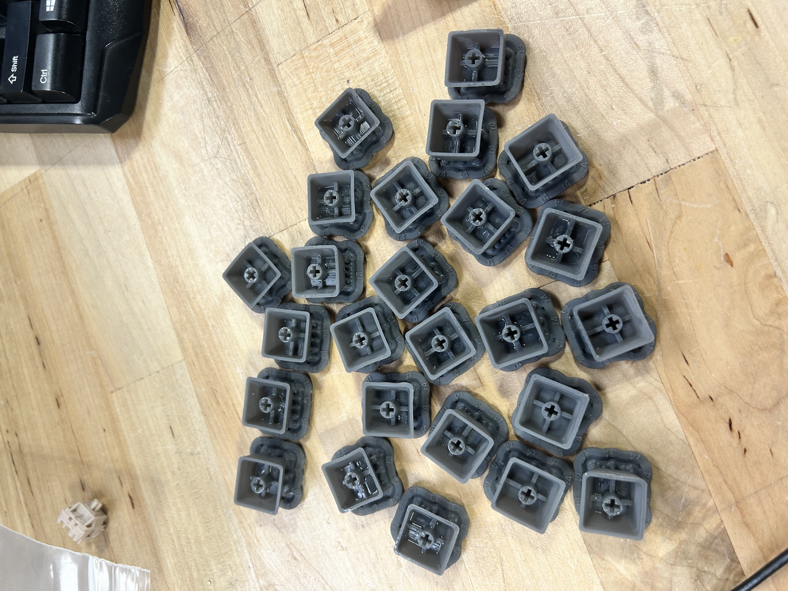
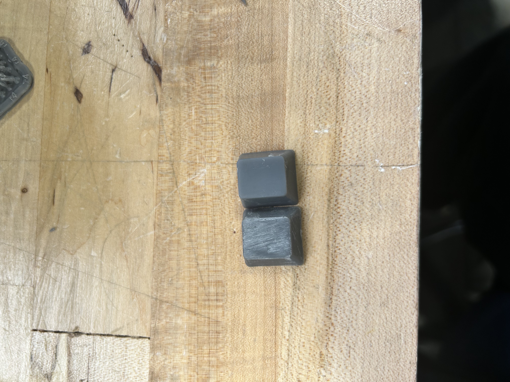
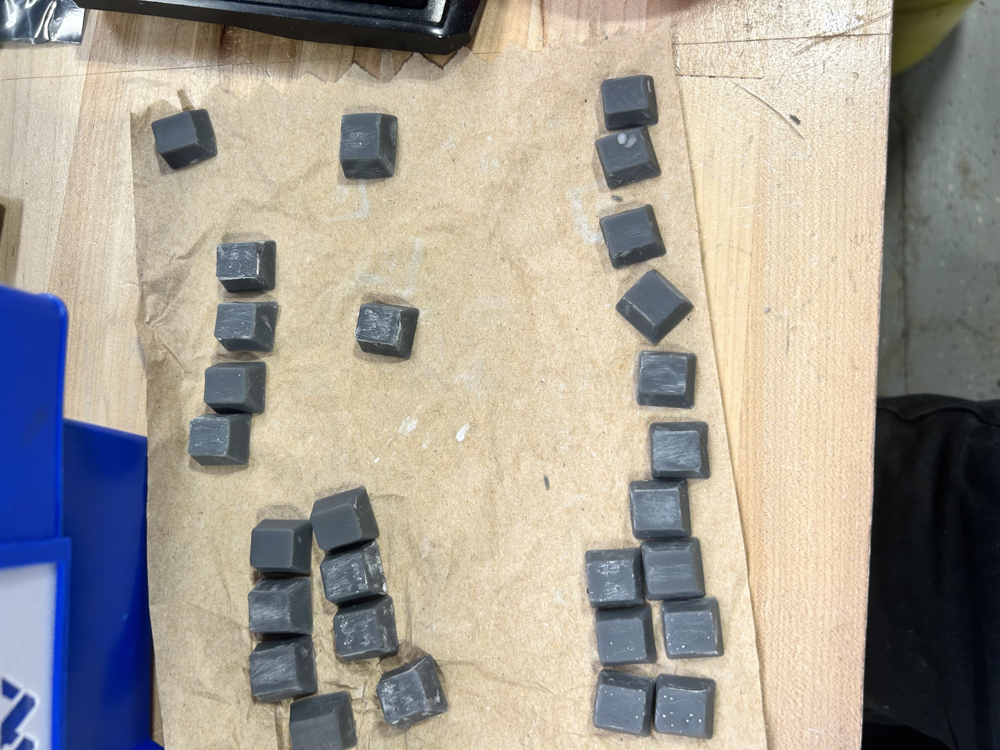
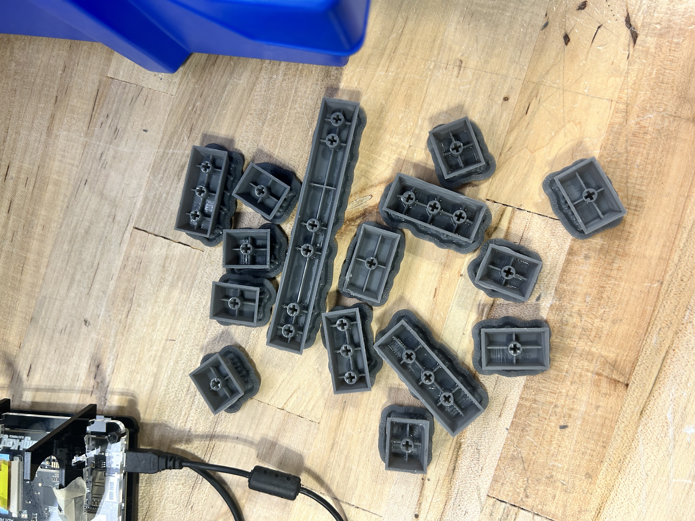

junior week jan. 22, 2026
this week was genuinely miserable. i spent basically all of my time sanding keycaps, and by the end of it i was so sick of looking at sandpaper that i never want to touch it again.

first batch of keycaps that actually work. second batch i've printed now.
i started out sanding the resin keycaps the “proper” way, going from 100 grit to 220 and then jumping all the way to 2000 (due to lack of sandpaper grit in between the values {wtf mr.l}). it was awful. the lower grits absolutely destroyed the surface, and once i got to the higher grits it just exposed all these white, scratch-looking marks that would not go away.
most of my time was spent in this awful loop of sanding, wiping the dust off, checking the surface, getting annoyed, and then sanding more. it felt like no matter how long i worked on a single keycap, it still looked bad. multiply that by the number of keycaps i need, and it became painfully obvious how bad of an idea this was.
at some point during the week, i seriously regretted not just buying keycaps. printing them sounded cool at first, but actually finishing them is a nightmare. sanding one keycap is annoying. sanding a whole set is borderline torture.
eventually, i changed strategies and decided to only use 2000 grit sandpaper with water, hoping that would be gentler and avoid making things worse. it definitely helped a little, and the surface ended up smoother overall, but it still didn’t fully fix the problem. the scratch marks are less obvious, but they’re still there if you look closely.

left side uses the progressive increase. right side is just 2k and water
right now, sanding alone doesn’t seem like it’s going to get me the finish i want. going forward, i might experiment with epoxy, paint, or some kind of coating to hide the imperfections instead of trying to sand them out completely.

about 25 keycaps done.
overall, this week was just a long, frustrating lesson in how much post-processing resin prints actually need. next time, i’m either changing my process completely or just buying the parts and saving myself the pain.
